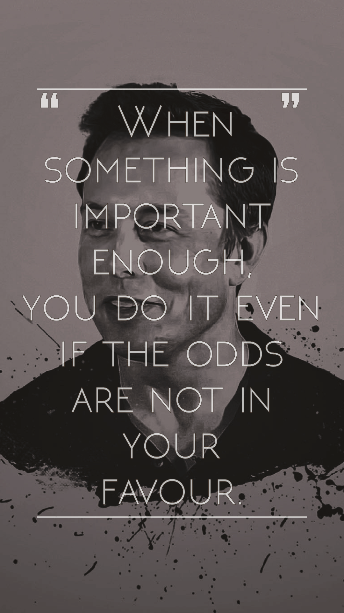

ELON MUSK
"If you go back say, 300 years, the things we take for granted today, you’d be burned at stake for. Being able to fly. That’s crazy. Being able to see over long distances, being able to communicate, having effectively with the Internet as a group mind of sorts, and having access to all the world’s information instantly from almost anywhere on the earth. This stuff that really would be considered magic in times past."
TIMELINE
- In 2000, he merges with his rival start-up Confinity to form PayPal
- Later that same year, he got ousted from PayPal as a CEO (while on honeymoon). Regardless of that, Musk continues to invest money in it
- In 2001, Elon moved to LA to be closer to the space industry and learned how to build rockets from books
- In 2002, after finding out that rockets are overpriced, the ambitious entrepreneur started Space X and got 250M from sale of PayPal
- In 2004, he founded likeminded people and started his venture into electric cars - TESLA
- In 2006, his first rocket was launched and exploded. Moreover, he won a NASA contracts to demo delivery and became the first investor of Solar City - his cousin's company
- In 2007, his second rocket was launched... and exploded again
- In 2009, Musk unveiled the Model S car
- In 2010, TESLA went public at 17$ per share, ending at $24 by the end of the day
- In 2011, Elon announced the project for reusable rockets, which would make flights 100 times cheaper. This was also the year in which Musk promised to send humans to Mars by 2031
- In 2012, the shipping for Model S begins while the Model X is unveiled and a supercharger network for the cars was launched
- In 2014, he started building the Gigafacory to mass produce batteries
- In 2015, Musk unveiled Powerwall, first customers got their Model X. However, there was also a failed launch of a rocket (after 19 successful launches) but also a successul landing of the first reusable rocket to reach orbit.
- In 2017, he started the Boring Company to dig tunnels, two new cars were uvailed - TESlA Roadster and and the Semi Electric Truc and first customers got their Model 3.
- In 2018, Elon Musk launched his largest rocket - The Falcon Heavy


